Entrika simgeleri
Kartların ve oyun ekranlarının bütün simgeleri, seçilen A üslubunda: kabartma altın varak, içinde mine. 49 simge; her biri 48, 24 ve 16 pikselde, krem kâğıtta ve koyu zeminde. 16 pikselin gerçek hâlini görmek için sayfayı telefonda yatay aç.
Hepsi 16 pikselde
Arayüz metnindeki boyut. Sıra aşağıdaki gruplarla aynı.
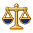
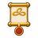
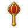
Takım
Her karede soldan sağa 48, 24 ve 16 piksel; solda krem kâğıt, sağda koyu zemin. Sağ üstteki ad, dosyanın ve terms.json simgesinin adı.
Roller
Kim olduğun ve hangi koltukta oturduğun. 11
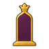
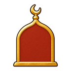

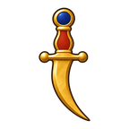


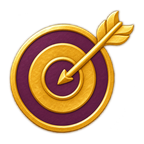
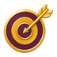
Alanlar
Kartın taşındaki alan. 3


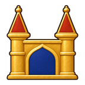
Kriz akışı
Bir krizin adımları ve araçları. 9
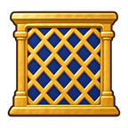
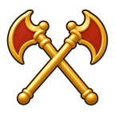

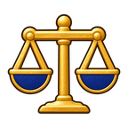
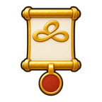


Yollar
Sadakat ve İhanet yolları ve üstlerine konan kartlar. 4

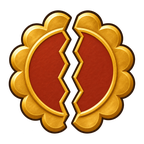

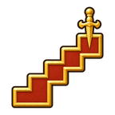
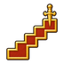
Güçler ve bilgi
Güç panelleri ve kimin neyi gördüğü. 4
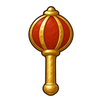
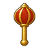
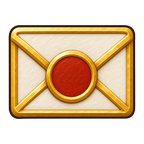
Sıklık
Bir etkinin ne sıklıkla çalıştığı. 3
Arayüz
Oyun ekranlarının düğmeleri ve işaretleri. 15

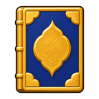

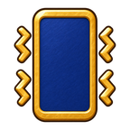

Notlar
- Dosya adları terms.json'daki simge adlarıyla aynı, böylece oyun <ad>.png dosyasını doğrudan bulur. Öneriden gelen dört dosyanın adı değişti: vekil → minister, hirs → ambition, kul → companion, taraf → allegiance.
- Öneriden gelen 12 simge yeniden üretilmedi, olduğu gibi kopyalandı.
- Tertip artık hilal değil, saray penceresinin kafesi. Takımda gece imgesi yok.
- İnsan ve yüz yok. Süleyman bir taç, Karakter boş bir sivri kemer çerçevesi, Kul bir ibrik, İtiraz çapraz iki teber.
- Birinci ve İkinci Vekil Vekil kavuğuna bir madalyon ekler: Birinci'de kırmızı madalyonda bir çubuk, İkinci'de lacivert madalyonda iki çubuk.
- Sıklık simgeleri aynı halkayı paylaşır: Oyunda bir'de çubuk, Krizde bir'de dönen ok, Her zaman'da sonsuzluk işareti.
- Önceki, Sonraki'nin aynadaki kopyası; ayrı üretilmedi.
- Emekli simgeler takımda yok: sahiplen, isimsiz, mektup.
- Boyutlar. 48 piksel 144'lük, 24 piksel 72'lik, 16 piksel 48'lik kopyayı kullanıyor, telefonun 3x ekranına göre.
Birden çok deneme
- Açık: ilk boru düz ve inceydi, 16 pikselde bir çizgiye iniyordu. Yarım daire kıvrık, kalın bir boru olarak yeniden üretildi.
- Sadakat yolu ve İhanet yolu: ilk hâlleri yatay bir şeritti, 16 pikselde 4–5 piksel yüksekliğe iniyordu. Kareyi dolduran bir merdiven olarak yeniden üretildi; şerit ve kalkan ya da hançer aynı kaldı.
- Güvenilir, Titreşim, Şüpheli ve Devam: ilk çalıştırma görsel vermedi, çünkü Mac uykuya geçince Codex'in bağlantısı koptu. Aynı promptla yeniden çalıştırıldılar. Devam beşinci çalıştırmada çıktı. Açık ve iki yol da yeniden üretilirken aynı kopmaya takıldı.
- İkinci Vekil'in kavuğu Vekil'inkinden biraz daha soğan biçimli çıktı. Madalyon ayrımı taşıyor; istenirse yeniden üretilir.
Simgeler Codex'in görsel üreticisiyle (image_gen) yapıldı; insan ve yüz yok. Dosyalar art/icons/set/ altında: 512 piksellik ana kopya ve 144, 72, 48 piksellik kopyalar. Promptlar art/icons/proposals/prompts.md içinde.